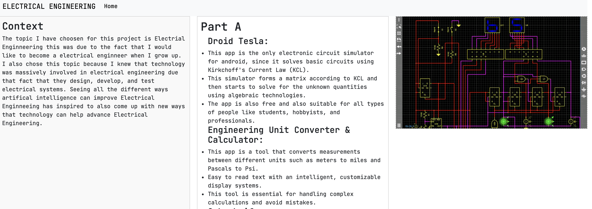

This project was a group collaboration about me and my partner's intrests for our future careers, I would like to pursue Electrical Engineering and Ethan Li wants to pursue Mechanical Engineering and we found out that our projects have very similar topics, and decided to work together because we are very good friends taht are confident in our collaboration abilities to work together to make the wonderful website that we have created. ANother reason we worked together because we knew that electrical and mechanical engineers work together pretty frequently since many of the skills that are neeeded to create many products require both of these professions. We used similar already made hardware that both electrical and mechanical enginners made such as cyperknife, which is a non-invasive treatment for cancerous and non cancerous tumors and other conditions where radation therapy is indicated. We practiced a lot during class and our free time on how to present our project efficiently, for example there was this one time where we made one of our friends give us feedback on our presentation when we were presenting it on call.
Some problems that me and Ethan Li faced during the presenatation preparation and creation of our elevator pitch would be finding ways we could go back and forth in our presentaion since we had to know the timeline on how we would strcutre our presentaion. Another porblem we had was fidning an intresting hook that will really drag the audience in and would like to know more about our project, so that took a lot of resaerch finding a good hook. Another problem we faced the timing of our presentation and trying to minimize it to one minute long and we did this by focusing on the main points of our project that we want the audience to know.
Some things I have learned from my in-class presentation and Expo elevator pitch is that communication is very important especially when your working with a partner because during the Expo elevator pitch, me and Ethan Li kept going back and forth during our presentaion and we sounded very syncronized because we would talk about each other's websites and projects like we did both of our websites when we really just did one website each.Also preparing for questions that the audience might ask you was also a crucial thing in really perfecting our presentaion since during the expo elevator pitch, me and Ethan Li predicted what questions they might us from hearing the judgers ask similar questions to the people that presented before us. Another thing I learned from these presentaions is how important practicing timing before hand really is, since if me and Ethan didn't pratice making our presentation around 1 minute long we would have made our presenation way longer than it was supposed to be and we would have been talking about useless points that the judger's around looking for and miss focusing on the main points of our projects such as hook, how we created our product, our website, our tool, and our takeaways.
Next school year I will be in SEP 11 and some goals I want to accomplish next school year for SEP would be completing all the classworks and homeworks on time and keep up working effeciently with future collaborators/partners. Another goal I have for future me would be practicing for future presentations a bit more effeciently.
Presentaion Slides